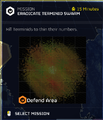
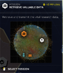
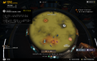
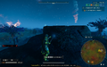
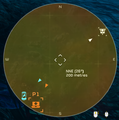
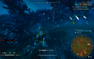

孢子气体
This 条款 is a stub.
You can help by expanding it.
Instructions: Add Screenshots and Additional Tactical 详情
Instructions: Add Screenshots and Additional Tactical 详情
“Map obscured by Bug Spores
— 操作 Modifiers 描述
Atmospheric Spores 是一个 操作 修正, exclusive to the 终结族 front.
详情
The Bug Spores has a number of 效果 which obstruct the intelligence 获取 of the 任务 map:
- Topography is heavily obscured
- Enemy (终结族) unit "blips" won't appear the 小地图
- Area of Influence (AoI) is 极其 困难 to make out due the blending colours, effectively masking 虫巢 and other AoI-heat-zones completely invisible on the 小地图
- Even after 摧毁, the Bug Nests remain unmarked on the 小地图
Completing the 可选目标 "Activate the Radar / LiDAR 车站" will draw markers on the 小地图 for every point of interest; 终结族-units itself including 虫洞 however remain hidden from the 小地图.
图集

Operational Preview of an Eradication map being obscured by the Atmospheric Spores
Operational Preview of an 远征 map being obscured by the Atmospheric Spores
远征 Briefing Map being obscured by the Atmospheric Spores
任务 beginning on 行星 affected by Atmospheric Spores
Although 可见, the topography is very 困难 to make out through the Atmospheric Spores layer
任务 completion progress is 迹象 with markings on the 小地图 aside for the Bug Nests.